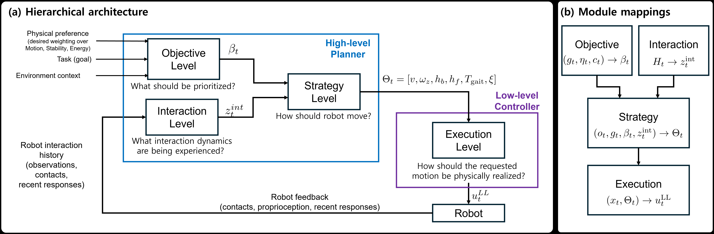
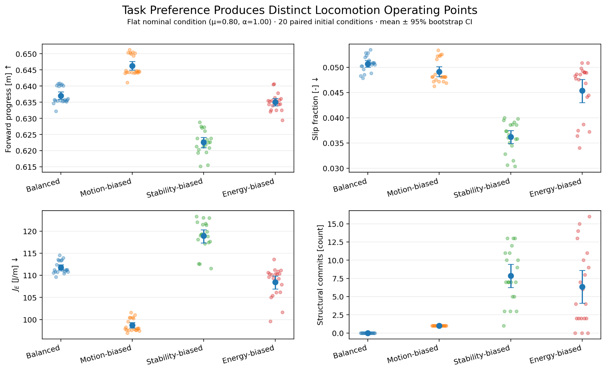

Multiple failure sources
Failures can emerge from objective selection, robot–terrain interaction, strategy authority, or low-level execution.
From hierarchical decomposition to role-specialized adaptation.
The same locomotion task can fail for different reasons across terrain. TRACER asks a structural question: which component should adapt to a given terrain-induced failure?
Failures can emerge from objective selection, robot–terrain interaction, strategy authority, or low-level execution.
Existing approaches adapt different parts of the stack, but the roles and interfaces between them are often coupled.
Increasing a reward weight does not guarantee improvement in the physical quantity carrying the same label.
TRACER makes these interfaces explicit so that a mismatch can be localized rather than hidden inside a single adaptation mechanism.
TRACER separates heterogeneous-terrain adaptation into four functional roles: Objective and Interaction provide upstream information, Strategy produces interpretable locomotion references, and Execution physically realizes the requested motion.

Core hierarchy used to diagnose where task preference, interaction information, high-level strategy, and low-level physical realization enter the locomotion stack.
Changing task preference shifts the robot toward distinct physical operating points. The shifts are meaningful, but they are not perfectly axis-aligned.

Controlled preference sweep on the same nominal plant with 20 paired initial conditions. Only task preference η changes.
| Observation | Interpretation |
|---|---|
| Objective conditioning changes Strategy | Internal conditioning is behaviorally meaningful. |
| Physical effects remain coupled | Reward semantics ≠ physical semantics. |
| Stability is harder to isolate | The Strategy interface needs richer contact / gait authority. |
The interface diagnosis motivates a more explicit separation of continuous task semantics from interaction-driven structural adaptation.
Task preference is retained as explicit semantic information while calibrated objective conditioning provides an internal coordinate.
Interaction history is routed to a structural gait channel, separating hidden physical mismatch from task intent.
Items in this section extend beyond the initial workshop study and summarize the current TRACER direction.
Project materials for TRACER. This page will be updated with additional videos, code, and future publications.